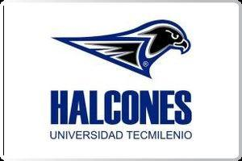

ELIGE TU PROPOSITO DE VIDA
Estudia y crece con la Universidad Tecmilenio y su modelo educativo único en México, con el cual se ha consolidado como una de las mejores instituciones de educación superior en el país. Experiencia educativa a tu medida Aprende haciendo y adquiere experiencia Psicología positiva Solidez e innovación
LICENCIATURAS:
HUMANIDADES Y CIENCIAS SOCIALES
Licenciatura En Derecho:
La Licenciatura de Derecho en Tecmilenio en Línea tiene como objetivo principal formarte como profesional especialista en técnicas jurídicas, defensa judicial, asesoría en solución de conflictos y en materia de derechos humanos.
Dedícate a la abogacía con la metodología innovadora de Tecmilenio. Termina tu licenciatura en 3 años y entra al mercado laboral con las habilidades necesarias para triunfar.
Licenciatura En Educacion y Desarrollo
La Licenciatura de Educación y Desarrollo en Tecmilenio en Línea tiene como objetivo principal formarte como docente y experto en técnicas pedagógicas en diversas áreas (científica, tecnológica, humanística).
Dedícate a la docencia con la metodología innovadora de Tecmilenio. Termina tu licenciatura en 3 años y entra al mercado laboral con las habilidades necesarias para triunfar.
Una Universidad Pensada A Tu Medida
Estudiar en Tecmilenio en Línea te permitirá ser dueño de tu tiempo y vida personal. Esta modalidad te dará la flexibilidad de poder trabajar, estudiar y además pasar tiempo con tu familia. Tú decides donde y cuando realizar tus tareas y exámenes.
Becas Y Bonificaciones
Tecmilenio en Línea cuenta con un programa de becas para sus alumnos sobresalientes y con necesidad de apoyo económico. Aplican para carreras y maestrías online. Comunícate con un asesor al número gratuito (800 4440647) o llena nuestro formulario para obtener informes de becas disponibles para ti.
Convenios Tecmilenio
En Tecmilenio nos importa la situación económica de nuestros alumnos. Por ello hemos creado un amplio repertorio de convenios con más de 400 empresas e instituciones. Estas alianzas dan lugar a nuestras Becas Convenio, con el objetivo de ayudar al desarrollo y financiamiento de los alumnos o famiiliares de aquellos que desempeñen labores en alguna de estas opciones.
Nuestras alianzas
Tenemos más de 400 convenios disponibles. Entre ellos se encuentran: BBVA Bancomer | CFE | Femsa | Grupo Modelo | Soriana | Starbucks | Volaris | Walmart